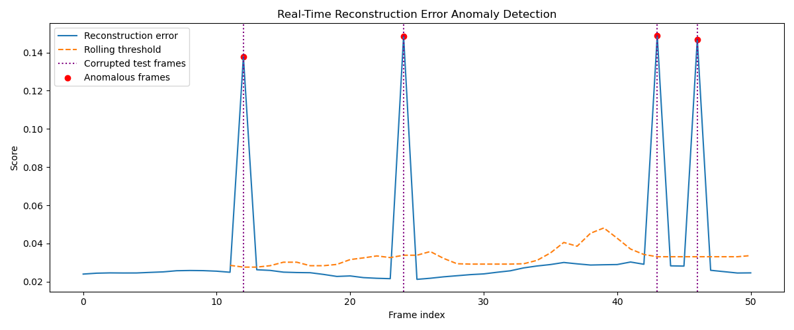
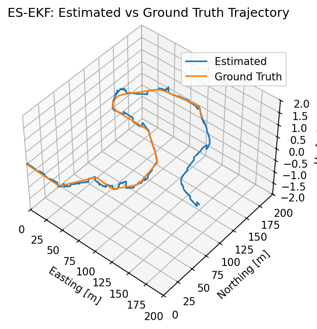

PhD Candidate in Mechanical Engineering
University of Minnesota · Minor in Computer Science
Advisor: Dr. Rajesh Rajamani
Research: end-effector position estimation in off-road vehicles using vehicle-level and actuator-level sensing solutions.
Mechanical Engineering PhD Candidate · Computer Science Minor
Robotics and control systems researcher developing real-time sensing, estimation, and control methods for autonomous, mechatronic, and physical systems.
Home / About
Sajjad Daroudi is a PhD Candidate in Mechanical Engineering, with a minor in Computer Science, at the University of Minnesota. His work focuses on robotics, state estimation, control systems, embedded intelligence, sensor fusion, computer vision, autonomous systems, and deep learning for physical systems.
He works in the Laboratory for Innovations in Sensing, Estimation, and Control at the University of Minnesota under Dr. Rajesh Rajamani, developing high-accuracy, low-cost sensing solutions for industrial, agricultural, and construction vehicles.
Education
University of Minnesota · Minor in Computer Science
Advisor: Dr. Rajesh Rajamani
Research: end-effector position estimation in off-road vehicles using vehicle-level and actuator-level sensing solutions.
Sharif University of Technology · GPA: 18.96/20
Research: biomechanical load estimation during load-lifting activities using deep learning.
Sharif University of Technology · GPA: 17.4/20
Automatic admission to the MSc program for ranking among top BSc students.
University of Minnesota, Fall 2023
Department fellowship award valued at over $53,000.
Research Interests
Kalman filtering, extended and unscented Kalman filters, nonlinear observers, and real-time inference.
Feedback control, path tracking, mechatronic systems, and ROS-based experimental platforms.
Multi-sensor integration for accurate pose, angle, and actuator state estimation in field conditions.
Deployable C/C++, microcontroller implementation, and physical-system compensation using learning models.
Research Highlights
End-effector position estimation for off-road vehicles using IMUs, adaptive vibration rejection, and nonlinear observer design.
Ferrous actuator piston displacement estimation using magnetic sensors, switched-gain nonlinear observers, and hysteresis-aware modeling.
Two-dimensional end-effector planar position measurement using a new ultrasonic sensor approach.
Projects

Autoencoder-based anomaly detection project using KITTI-style autonomous driving data.
View Repository
Error-state extended Kalman filter work for pose estimation and autonomous system localization.
View Repository
Controller implementation for autonomous vehicle behavior and path-following experiments.
View RepositoryPublications
Technical Skills
Python, C/C++, MATLAB, ROS
Kalman Filter, EKF, UKF, nonlinear observers
Linear and nonlinear control, feedback systems
Arduino, MPLAB, Raspberry Pi, microcontroller deployment
PyTorch, neural networks, deep learning for physical systems
SolidWorks, Simulink, Visual Studio, Git
Experience
Laboratory for Innovations in Sensing, Estimation, and Control, University of Minnesota
Research assistantship focused on off-road vehicle end-effector estimation using IMUs, magnetic sensing, ultrasonic sensing, and nonlinear observers.
Spine Biomechanics Laboratory, Sharif University of Technology
Developed deep-learning approaches for estimating biomechanical loads during load-lifting activities.
Fundamentals of Design and Manufacturing, University of Minnesota, Fall 2023
Numerical Computations, Sharif University of Technology, Spring 2022
Rajesh Rajamani and Sajjad Daroudi. Non-Reflecting Sonar Position Sensors, Systems, and Methods of Use for Measuring Actuator Displacement. Filed by the University of Minnesota, May 2025.
CV
Download the current accomplishments/CV PDF for a fuller record of research, publications, teaching, and awards.
Contact
For research collaboration, project discussion, or academic inquiries, use the links below.